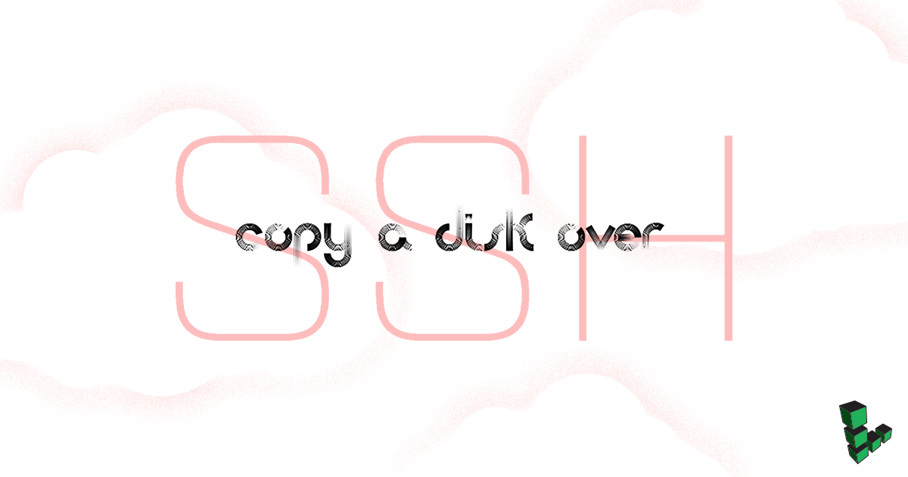

Copy a Disk Over SSH
Updated by Linode Written by Linode

Piping SSH commands to utilities such as dd, gzip, or rsync is an easy way to copy a Linode’s data into a single file for later extraction. This can effectively back up your Linode’s disk or migrate your installed system among Linodes.
This guide demonstrates how to download a .img file to your computer over SSH containing a block-level copy of your Linode’s disk device created with dd.
Download a Disk over SSH
Boot into Rescue Mode
Prepare the receiving computer by verifying that SSH is installed. Most Linux/Unix-like systems include OpenSSH in their package base by default. If the receiving system is Microsoft Windows, there are multiple SSH solutions available such as Cygwin and PuTTY.
Reboot Your Linode into rescue mode and connect to it using Lish.
Set a root password for the rescue system and start the SSH server:
passwd service ssh start
Copy and Download the Disk
Copy the disk over SSH from the Linode to the receiving machine. Replace
192.0.2.9with the Linode’s IP address and/home/archive/linode.imgwith the path where you want to store the disk.ssh root@192.0.2.9 "dd if=/dev/sda " | dd of=/home/archive/linode.imgNote
The device/dev/sdais used for Linodes running on KVM. If your Linode is still using XEN, then use/dev/xvdathroughout this guide instead.The receiving machine will connect to the Linode. Verify the SSH key fingerprints. If valid, type
yesand press Enter to continue:The authenticity of host '192.0.2.9 (192.0.2.9)' can't be established. RSA key fingerprint is 39:6b:eb:05:f1:28:95:f0:da:63:17:9e:6b:6b:11:4a. Are you sure you want to continue connecting (yes/no)? yesEnter the root password you created above for the rescue system:
Warning: Permanently added '192.0.2.9' (RSA) to the list of known hosts. root@192.0.2.9's password:When the transfer completes, you’ll see a summary output similar to below:
4096000+0 records in 4096000+0 records out 2097152000 bytes (2.1 GB) copied, 371.632 seconds, 5.6 MB/sCopying your disk can take a while. If you have a slow internet connection, add the
-Coption to the SSH command to enable gzip compression of the disk image. If you receive aWrite failed: Broken pipeerror, repeat this process.
Verify the Disk
Once the copy has completed, verify it by mounting the image on the receiving machine.
Switch users to
rooton receiving machine:suMake a directory to mount the disk as:
mkdir linodeMount the disk. Replace
linode.imgwith the name of the of your Linode’s disk.mount -o loop linode.img linodeList the directories on the disk to indicate if everything has transferred. Your output of
lsis similar to below:ls linodebin dev home lost+found mnt proc sbin srv tmp var boot etc lib media opt root selinux sys usr
Upload a Disk over SSH
You may want to upload your disk image to a new server. For example, if you previously downloaded your Linode disk and deleted the Linode to halt billing on it, you can create a new Linode at a later date and upload the disk to resume your services.
Prepare the new Linode by first creating a new swap disk. Doing this first means that you can simply use the Linode’s remaining space for the system disk without doing any subtraction. A swap disk is typically starts at 256 MB or 512 MB in size, but can be larger or smaller depending upon your needs.
Access your Linode through the Linode Manager. Select Create a new disk and select
swapfrom the Type drop down menu.Now use the remaining disk space to create the system drive you’ll copy your disk image to. Enter a descriptive name in the Label field, and be sure the Size is large enough to hold the contents of the disk you are uploading. Click Save Changes.
Reboot Your Linode into rescue mode and start the SSH server as described above.
Upload the disk over SSH to the Linode. Replace
192.0.2.9with the Linode’s IP address and/home/archive/linode.imgwith the disk images’s path.dd if=/home/archive/linode.img | ssh root@192.0.2.9 "dd of=/dev/sda"When the transfer completes, you’ll see a summary output similar to below:
49807360+0 records in 49807360+0 records out 25501368320 bytes (26 GB) copied, 9462.12 s, 2.7 MB/sCopying your disk can take a while. If you receive a
Write failed: Broken pipeerror, repeat this process.
{kind=link}
Expand the Filesystem
If the disk you created on the new server is larger than the source disk (for example you’re transferring a disk from a smaller Linode to a larger Linode), you’ll have to resize the filesystem to make use of the new space.
You can check if this is necessary by comparing the space of the filesystem to the space of the new disk:
root@localhost:~# df -h
Filesystem Size Used Avail Use% Mounted on
/dev/sda 24G 19G 4.0G 83% /
root@localhost:~# lsblk
NAME MAJ:MIN RM SIZE RO TYPE MOUNTPOINT
sda 8:0 0 30G 0 disk /
In the above example, the values in the Size column don’t match. Although the disk is 30 GB, the filesystem can only see 24 GB.
To use all available space on the new disk, execute the following from rescue mode. Replace /dev/sdx with your system disk’s device identifier (/dev/sda, /dev/sdb, etc.).
e2fsck -f /dev/sdx
resize2fs /dev/sdx
Boot from the Disk
You will now need to create a new configuration profile on the receiving Linode.
Select your Linode and select Create a New Configuration Profile.
Enter a name for the configuration profile in the Label field, and in the Block Device Assignment section set the
/dev/sdato the new system disk you created earlier in this section of the guide. Set/dev/sdbto the swap image.The Linode is now ready to reboot using the new system disk.
{kind=link}
Join our Community
Find answers, ask questions, and help others.
This guide is published under a CC BY-ND 4.0 license.